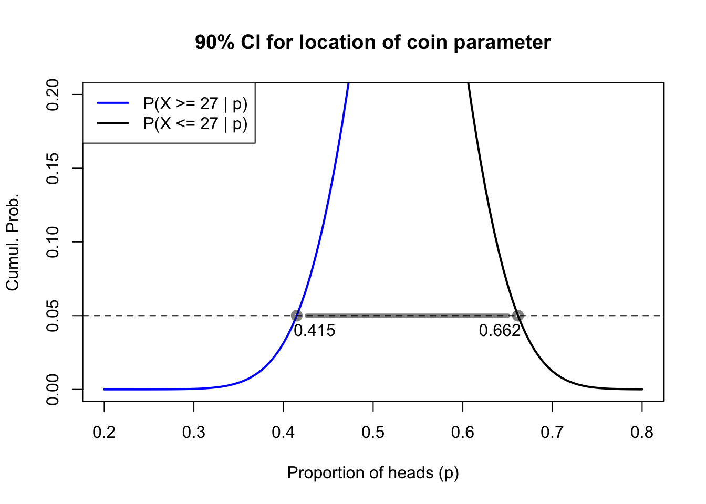

We have learned how to identify the best guess for an unknown parameter from the data. We have also learned how to check if a specific alternative is a reasonable guess, or if the data make it too unlikely to be true. Now we shall learn how to find the range of all reasonable guesses for an unknown parameter. This range is called a confidence interval, because the size of the range depends on how confident we are that it will contain the true parameter:
If we pick wide ranges, we can be confident that they will actually include the true parameter, but the range might be so wide that we don’t gain useful or actionable information.
If we pick narrow ranges, we seem much more precise in our estimates, but we run a greater risk of being wrong about where the true parameter is located.
You are the one who decides how confident to be. Combining your own risk tolerance with the precise nature of the problem at hand, you choose a confidence level, usually a number close to 100%. Then you find the upper and lower bounds for your interval.
I wish I could now show you how to construct a confidence interval. Many other textbooks do, at this point. But the truth is, confidence intervals are very poorly defined and statisticians do not agree on how best to build them. For the moment, I will leave you with an unsatisfying half-answer: what a confidence interval should do.
Note
Let \(\theta \in \mathcal{S}\) be a parameter from a random variable \(X\) and let \(\boldsymbol{x}\) be an as-yet unobserved sample from \(X\). Suppose that \(a(\boldsymbol{x})\) and \(b(\boldsymbol{x})\) are also random variables that are functions of the sample (that is, their values will vary sample to sample). If,
for all samples and all parameter values $, then \([a(\boldsymbol{x}),b(\boldsymbol{x})]\) is a \(1 - \alpha\)confidence interval for the true value of the parameter \(\theta\).
I will show you one example of an exact confidence interval below, and in the next chapter I will show you a method for constructing approximate confidence intervals which are much easier to calculate and which are very accurate for large sample sizes.
Let’s return to the coin data: 27 heads from 50 trials. We’ve already shown that a fair 50-50 coin could reasonably have produced this sample. We’ve also shown that an unfair 40-60 coin would not likely have produced this sample. Using a computer’s help and the CDF of the binomial distribution, I can find the exact lower and upper bounds \(p^*_{l,0.05}\) and \(p^*_{u,0.05}\) such that:
If \(p\) were any lower than \(p^*_{l,0.05}\), then observing so many heads (27 or more) would happen less than 5% of the time
If \(p\) were any higher than \(p^*_{u,0.05}\), then observing so few heads (27 or fewer) would happen less than 5% of the time
When I use this method to build a confidence interval, I know that 10% of the time my data is going to “trick” me into constructing an interval which does not include the true parameter. This will happen when — by freak chance — the data contain so many heads (or so many tails) that the true parameter seems like a bad fit to the data. But 90% of the time the interval I create will contain the true parameter. Even when the data have a few more heads or a few more tails than expected, the true parameter will be among the values that could plausibly create such data. Therefore we say that this method produces an “exact” 90% confidence interval for \(p\).1
Code
#exact 90CI for binomial datapl <-uniroot(function(z){pbinom(26,50,z)-0.95},interval=c(0.3,0.7))$rootpu <-uniroot(function(z){pbinom(27,50,z)-0.05},interval=c(0.3,0.7))$rootplot(seq(0.2,0.8,0.005),1-pbinom(26,50,seq(0.2,0.8,0.005)),type='l',col='#0000ff',lwd=2,ylim=c(0,0.2),xlab='Proportion of heads (p)',ylab='Cumul. Prob.',main='90% CI for location of coin parameter')lines(seq(0.2,0.8,0.005),pbinom(27,50,seq(0.2,0.8,0.005)),type='l',col='#000000',lwd=2)abline(h=0.05,lty=2)lines(x=c(pl,pu),y=c(0.05,0.05),type='b',col='#00000080',lwd=4)legend(x='topleft',legend=c('P(X >= 27 | p)','P(X <= 27 | p)'),col=c('#0000ff','#000000'),lwd=2)text(x=c(pl+0.02,pu-0.02),y=c(0.05,0.05),pos=1,labels=round(c(pl,pu),3))

Figure 4.1: Construction of an exact binomial confidence interval
We will learn more about confidence intervals soon. But while we are discussing theory, I want to emphasize a few common misunderstandings about their concept and purpose. For the sake of argument, let’s say that you have a calculated a 95% confidence interval.
FALSE: “95% of the values of the distribution are inside the interval”
We are not trying to define or bound the overall distribution. We are only talking about a property of the distribution: a parameter like its mean, or its endpoints, or the slope in a regression.
FALSE: “The true parameter has a distribution described by our interval.”
The true parameter isn’t randomly distributed, or distributed at all: it’s just unknown. If our data only misleads us a little, it will be inside our interval. If our data misleads us a lot, the true parameter will be outside the interval. We don’t know how much our data is misleading us.
FALSE: “There’s a 95% chance that this interval contains the true parameter.”
Again, we are not talking about a probabilistic event. Once the interval has been calculated, there are no varying components. Our endpoints are fixed. The truth of where the parameter is was fixed before we woke up this morning, possibly before we were born. We are either right or wrong, and we don’t know which.
TRUE: “The process which created this interval successfully covers the true parameter in 95% of its applications.”
We don’t know if this specific interval is right or wrong, but we know the process usually results in success.
This particular method is known as the Clopper-Pearson interval. But as if to illustrate the confusion on this topic, it is neither the only “exact” calculation nor the one with the best performance!↩︎